Welcome to the fourth annual Goldies awards, where we celebrate notable achievements in thought leadership publishing from professional services firms in the past year. Professional services firms and other businesses are producing more and more content, and 2022 was no different in that respect. The result is that getting through to the target audience has become harder. (I get paid to keep track of what these firms are publishing, and frankly, it’s a Sisyphean task.)
One way professional services firms are trying to break through the clutter is format and channel diversification. Longer-form articles remain their primary storytelling vehicles, but we’re also seeing increasing use of interactives and animation, infographics and data visualizations, “charticles,” videos, podcasts, webinars, newsletters, dynamic websites, and mobile apps. Some formats, such as podcasts and videos (often talking heads), have already become thought leadership table stakes.
The 2022 Goldies will highlight some of the most interesting alternative thought leadership formats employed in the last 12 months (or longer, in some cases). Apologies in advance for the many strong pieces of work that I have undoubtedly missed.
Back to top
Strategy+business from PwC
Digital magazines
PwC’s Strategy+business recently launched a monthly digital-only magazine. Check out its November issue on climate change challenges and opportunities. It features a mix of text, video, interactive exhibits, and links to longer articles.
Culture duets with TikTok
and Egon Zehnder”
Social media
We knew it wouldn’t be long before a professional services firm teamed up with TikTok. The executive search firm Egon Zehnder partnered with TikTok to facilitate an exchange between CEOs and Generation Zers about workplace culture. The firm doesn’t say how it executed the conversation, but the discussion and presentation are stimulating.
“The groups have more in common than one may expect. They are interested in the same end result, but the ways in which they get there may diverge. Exploring the differences—and similarities—between tenured leaders and future leaders offered surprises around commonalities, and valuable insights into how to bridge the gap between the two cohorts.”
Is your organization ready for a
post-COVID-19 digital transformation?”
from Spencer Stuart
Diagnostic tools
Spencer Stuart, an executive search firm, writes that the COVID-19 pandemic has greatly accelerated the pace of corporate digital transformations.
“We anticipate that these dynamics will reshape company cultures, the way companies work and make decisions, organizational designs, how companies engage with customers, and in-demand skills going forward.”
To address these changes, the firm’s consultants fashioned an interesting interactive diagnostic tool for executives “to learn more about how you may need to adjust your company’s digital roadmap.”
Value creation in the metaverse”
from McKinsey
Website article landing pages
This colorful landing page on McKinsey.com summarizes some of the findings of this McKinsey report on the metaverse. Featuring several kinds of non-text-based approaches, the page gives readers an incentive to click on the longer report.
Employers look to expand health benefits while managing medical costs” from McKinsey
Charticles
McKinsey employed this exhibits-driven approach to highlight the findings of its survey of US employers. The exhibits are static, but they still tell the story in a way that readers might find more interesting than a traditional text-based account.
The Working Future: Six Worker Archetypes for the World Ahead” from Bain
Interactive graphics
“
Bain developed this interactive to highlight the findings found in this report. The report itself is well designed and also includes an interactive quiz addressing what kind of worker you are.
Accenture Foresight
and Deloitte Insights
Mobile apps
These mobile apps from Accenture and Deloitte do a great job of highlighting the thought leadership of these two big professional services firms. While both apps allow the user to explore multimedia, Accenture’s offers a choice of podcasts, videos, and charts (some of which are animated or interactive).


“
“
“
“
“